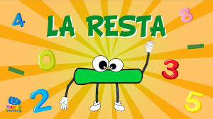

OperacionesbasicasTerceroprimaria
Aprende a Restar
Actividad

¡Practica y aprende!
Desde pequeños los niños comienzan a desarrollar habilidades matemáticas esenciales que los acompañarán por el resto de sus vidas. Es por esto por lo que queremos hacer de las matemáticas un juego muy divertido. ¡Aprende con nosotros!
Las primeras actividades de restas, nos ayudan a introducir este concepto con distintos juegos, de manera que puedas ir variando las actividades cada día, y así mantener el interés.
Obra publicada con Licencia Creative Commons Reconocimiento Compartir igual 4.0